Rebuilding a compliance platform site around intent
Ruleguard is a regtech platform for compliance teams in regulated firms. The old site led with an abstract promise and a wall of award badges. The specific problem was simpler: nothing above the fold showed the buyer what the product actually did.
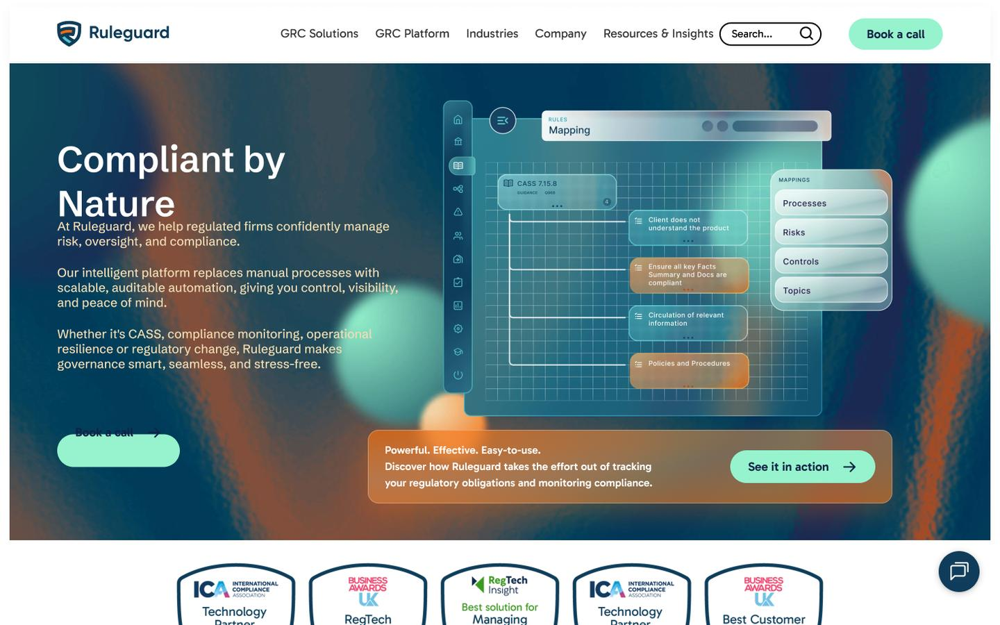
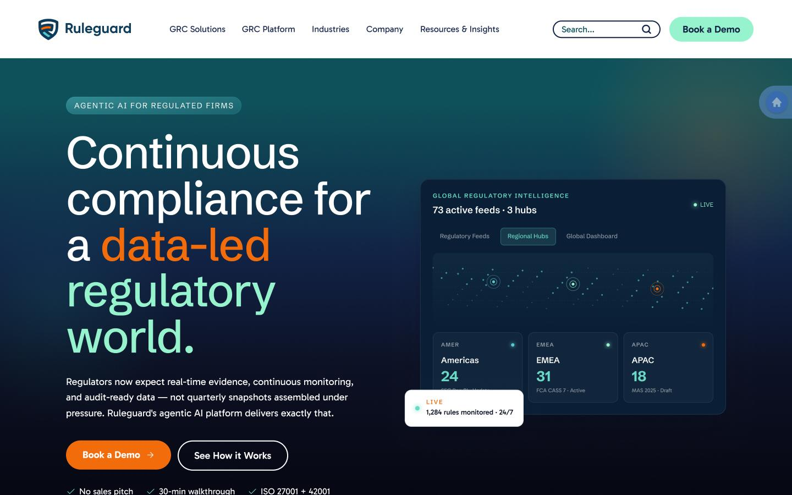
What changed and why
- The hero shows the product working. Active feeds, hub counts and regional rule counts answer the coverage question immediately.
- Two calls to action instead of one. Book a demo for the ready, see how it works for the researching.
- Objection handling at the decision point. No sales pitch, 30 minute walkthrough, ISO 27001 and 42001 placed beside the action.
- Award badges moved down. They are credibility, not the value proposition.
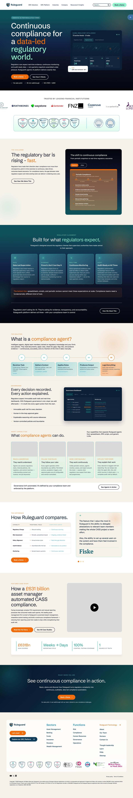
The document where I disagreed with the client
The client had valid concerns about parts of the strategy. Rather than either capitulating or arguing, I wrote the review in a fixed three-part structure for each disagreement: the client's valid concern, the strategic counter point, then the recommendation.
Naming their concern as valid first is not politeness. It is what makes the counter point readable, because nobody evaluates an argument fairly while they still think they have not been heard.
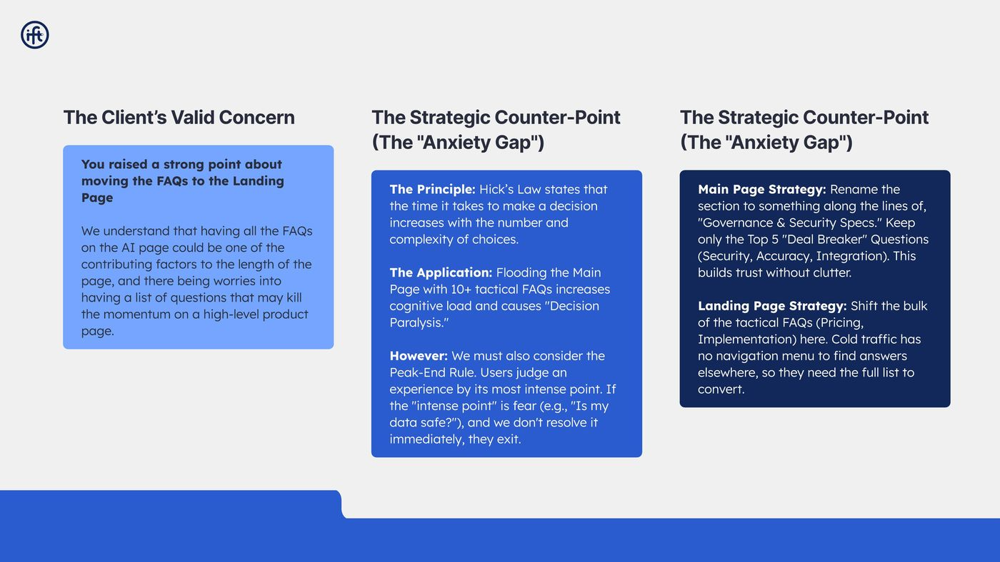
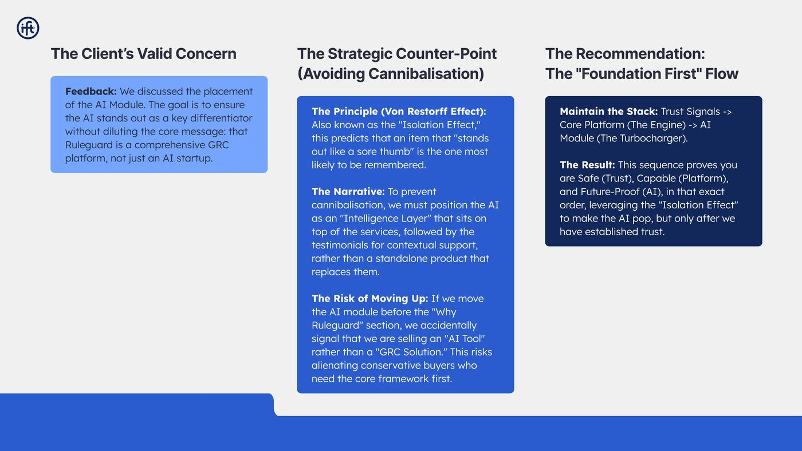
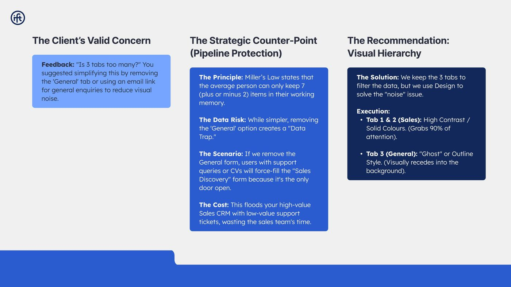
Phase one delivery, page by page
The user-journey work was split into a webinar fix and a platform fix, each stated as a problem, a diagnosis and a set of specific changes rather than a general direction.
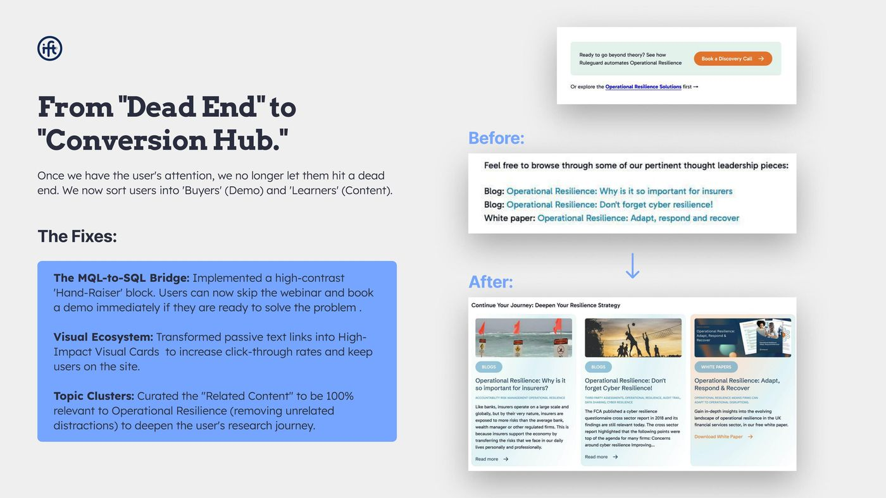
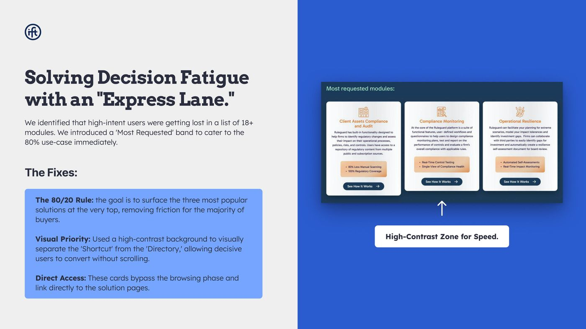
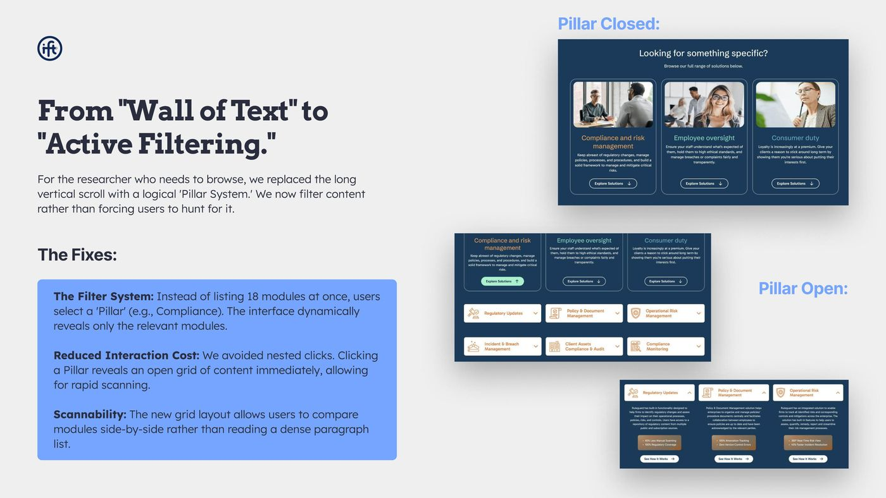
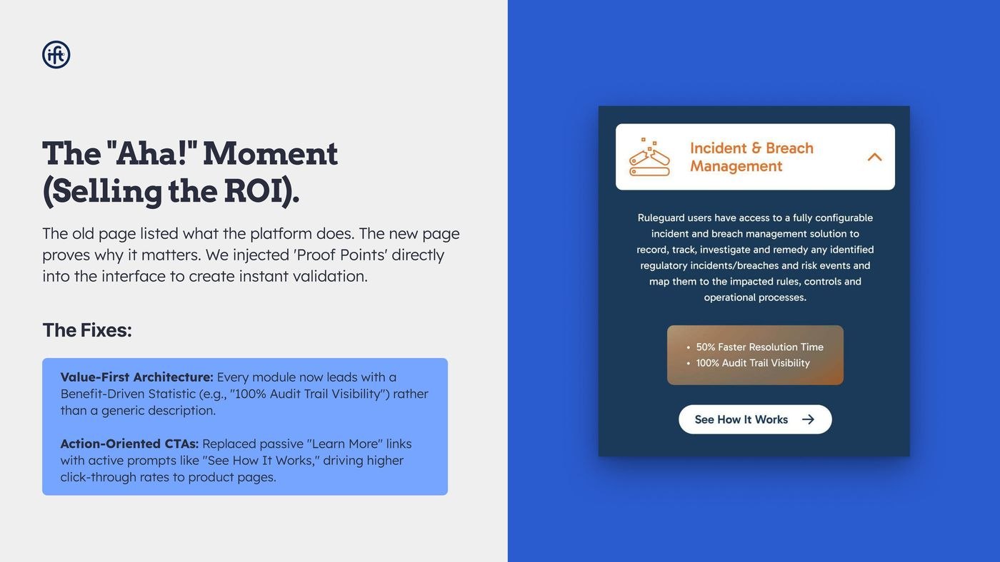
The rest of the system
A site this size is templates, not pages. Seven parent page types, four child page templates and a mobile design for each, so the pattern still holds when the client's marketing team adds a sector page I never saw.
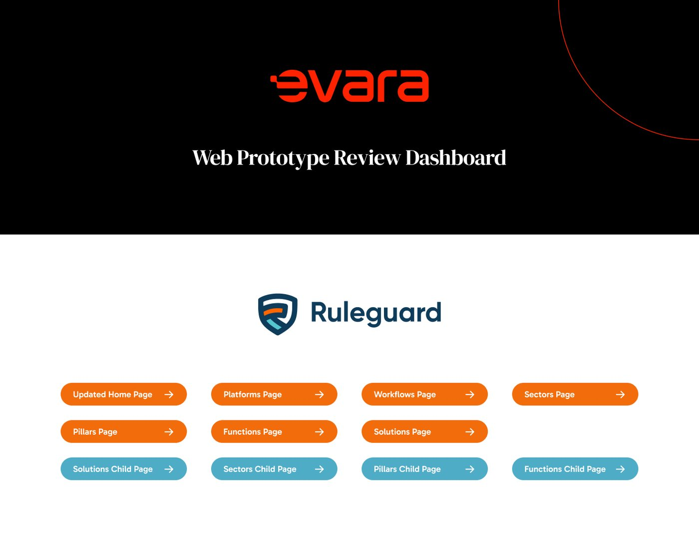


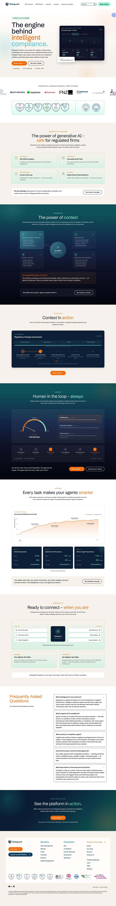

The unglamorous deliverable I am most confident about
A sitewide Google Tag Manager trigger schema. Every event, parameter and trigger written down before the build rather than reverse engineered afterwards. It is the document that determines whether the rest can be measured.
What I would do differently
I would have shipped the FAQ and webinar changes on their own first. They were the highest-intent, lowest-risk pages on the site, and releasing them ahead of the full redesign would have produced a cleaner read on a small change instead of one large release I can only measure in aggregate.